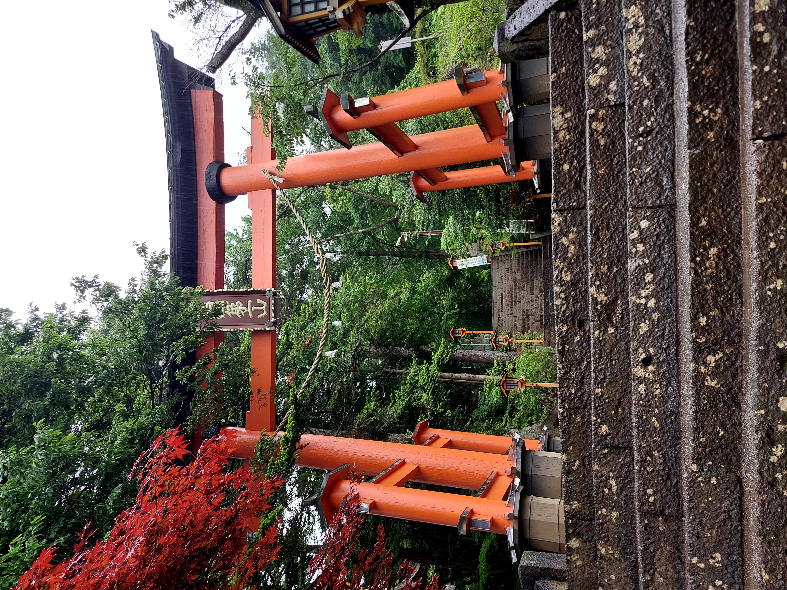
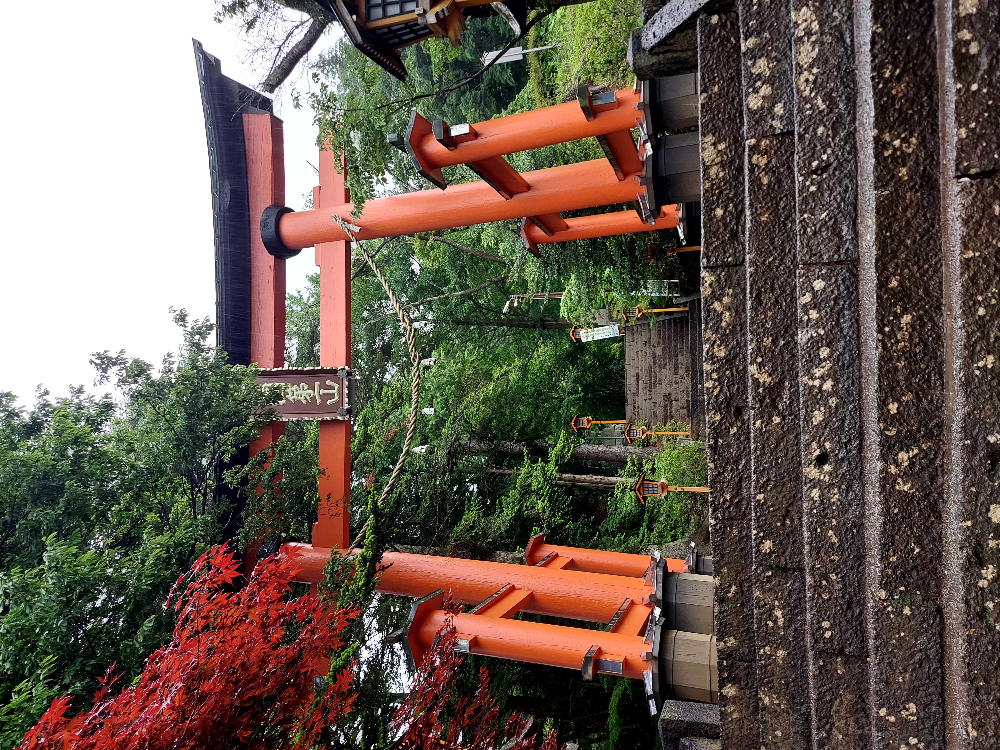

The Story
On this page you can read about our every day in Japan with full schedule.
Day 1
On the first day we had a flight from Latvia to Denmark at 7:55. We got up at 5 o'clock, had a breakfast and went to the airport. During the check-in lady asked if we had filled the form about entering Japan. I started stressing because after all research I've done I hadn't heard a thing about it before. She wrote down the website where we could fill this form and as we were waiting for the plane, I registred us and hoped everything would be alright.
When we landed in Denmark I asked staff about it, but they had no idea. The period between flights was 4 hours, so we waited on comfy chairs, and then moved closer to our gate. For all this time I watched the Ricky Gervais show so the time went fast.
(Dad kept saying that that's a flippin shed due to its size, but it can't really be seen on picture)
We had the first seats in our class, so there was enough leg space, and there also sat stuart, who was an incredibly kind old man, we asked him some questions concerning Japan, and exactly because of him I got the answer about the entrance form. Turned out we haven't filled it completely, so we had to complete it on place with pen.
The flight itself was very long(~13 hours), we had 2 meals: dinner and breakfast. They tasted okay, but I learned that during the flight all food seems tasteless due to abnormal conditions. We also had a tablet with an access to some films, music and games. You can even purchase internet there, so if you haven't prepared for long boredom that's a great solution.

But the most important thing was that even with legspace, it was extremely difficult to have some sleep. So I highly recommend to choose a flight which would arrive at your destination at evening, that way you can get a nice rest.
Day 2
We finally arrived at 7 in the morning in Haneda airport. It was all cloudy and there was a huge mist around the airport so we couldn't catch a glance at Tokyo. We got out of the airplane and moved to where everyone else were. First thing I noticed was that there were lots of workers, some of them just stood to show directions. They told us to move near ATM like machines. One person showed where to go, another pointed out which machine to approach, and for every machine there was a personal helper. These machines checked passport and put our fingerprints and faces in database. Next we filled the form, and passed passport-control, got the luggage and finally, we were officially in Japan.
I had a concrete plan of things we had to do. It went like this:
- Exchange currency
- Buy Wi-Fi SIM card
- Collect JR pass
- Purchase Tokyo Metro 2 day pass
- Get Suica card
We checked store with Wi-Fi opportunities, the price was around 40 EUR for 15 days, we kept that in mind and moved on to exchange our money to yen. The rate was okay so we had no problem with it. Then we got our JR pass, and lady kindly explained how it works(even though she wasn't fluent in English, she had a paper with instructions). Next we purchased the metro pass and got back to the store from the beginning, because we couldn't find better options. On they way out to Tokyo Monorail line, there were ticket machines with Suica image on top of them. With hope to buy it there we approached it, but turned out, they were out of them for some reason. Maybe it has something to do with the fact that it was Monday. Anyway, we set to English language and purchased train ticket by choosing our destination and inserting yen in it. For the whole trip we used Google Maps in order to find route for destination and it brilliantly completed its work.
The first ride and the first sight of Japan were outstanding, marvelous. The whole car was filled with Japanese people, completely different culture. The buildings around looked like they were built a year or two ago, they were clean and with no defects, so tall and close to each other. But roads weren't full with cars and people like one can imagine.
We arrived at the station and to our surprise we had to insert out train ticket back into machine so we can pass the gates. I kept mine but we couldn't find dads. With his confidence he just passed through the info section(which is always next to them) and staff wasn't in place so we didn't have to explain anything. We then bought tickets for next train till our hotel and tried to buy Suica, but again they didn't have one.
We finally arrived at our destination and for the first time we stepped on Japan's street. We went to out hotel and I was just flabbergasted. The whole atmosphere of a new country was overflowing in me. I read some signs written in katakana, saw some anime stuff(mostly because we stayed in Akihabara). I already noticed small details like massage place having a poster with high accent on masseuse having quite a big breast, and I don't judge it. I also found a fish store with the name "Allblue"(One Piece fans got me).
It was a rainy day, we found our hotel and near the entrace I saw the thing to wrap our umbrella. We asked receptionist to check-in. I could tell that her Englsih was not as profficient as in other countries but it was alright and if anything I could try to explain in Japanese. My dad went to the toilet, our luggage was wet and this lady offered me a towel to dry it. When dad came back he had a smile on his face and said I should check the toilet out. So I did and there was that smart toilet bowl. It had English translations and icons, so I didn't have trouble there. Near reception there were tables with drinks(water, coffe) and shelves with multiple mangas free to read. The lady asked what time we prefer to have a breakfast and gave us breakfast passes and since we checked-in before noon we couldn't go to our room, so we left our luggage and went to explore Japan.
I'll have these maps attached to every day, so it can be seen which places we visited. The places are put by order we visited them. Today was supposed to be relaxing day since we had a long flight and needed rest, so I placed things I wanted to visit and didn't expect to have my dad seeing them also. But since there was nothing left to do for him he joined me. At first we went to the shopping mall and it couldn't be compared to anything I've seen before. All floors were divided into categories so it was easier to understand where to look for. There was a huge diversity of items and sometimes we could find those which we didn't know about. Then we visited 3 anime shops looking for something interesting, but I knew I couldn't spend a lot of money during the first day, so we ended up not buying anything.

But my dad was already tired of it, so I had to find a restaurant nearby. Luckily there was one right near us which offered the same dish I wanted to try from another restaurant but that one was far away. We entered and it wasn't crowded, we got the menu and there weren't really much offers so we chose standard Tonkatsu and turned out we will cook it ourselves on some rock plate which had a strong candle under it. We got our food, but there were lots of stuff we didn't know about, so we asked passing cook what was it about, and again with poor English but understandable he explained what to do. Most of stuff goes in rice to add flavour and other things help to get different tastes of the whole food. At that time I noticed that I felt shakes and was a bit dizzy, on my comment about it my dad said he didn't feel anything. But that sensation hasn't left me for multiple days, so it could be due to the lack of sleep. The portion was too big for me, and the next thing about Japan is that you pay on the way out near reception instead of leaving money on the table. We left and dad said he needed a nap, it was already time when we could enter our room, so we headed back to hotel, where I left him and continued exploring stores. I bought souvenirs for one friend but couldn't find what I wanted even though I checked all stores in Akihabara. When I already have returned to hotel I searched on the websites and what I was looking for wasn't here. That way our first day passed.


Day 3
In the morning we went down to get a breakfast. We entered cafeteria and another lady instructed us that we have to flip card on our tray if we have finished the meal so staff knows when to take it. Also near the entrance you can take wet wipes to clean your hands(it's pretty common to have that instead of washing hands). There were not as many fruits as one can find in any other country but we still had decent breakfast. We finished eating and as the lady instructed we flipped card and exited. It's time to go sightseeing.
The weather forecast said it was going to rain, but in reality it was clear and sunny all day. We first headed towards Tokyo Tower by metro using our metro pass. It was really convenient since you didn't need to pay each time for individual ticket. When we got out of metro we started walking and noticed temple like building, so we went off course and payed more attention to it. Turned out it was a confenece hall and on the way back to track dad stopped to see the car parking, which was 2 stories tall and wanted to know how it works, becaues there were no obvious things which would raise and lower the car.

Finally we approached the tower, and dad insisted on going inside, with the intent to buy entering tickets, even though it was not in my plan. I kept saying we don't have money for that but he just paid with his card. So we went up to observatory. At first, they told us shortly how it was built and why. We got a free picture in middle(vertically) of the tower and finally got up to the highest point. There you can hear from audioguide what things are located where. So it a little helped us to understand our whereabouts. The view was cool, and the city just couldn't end. It was said that you can even see Mt.Fuji but it's a rare occasion. On the way down, we unlike normal people chose to use stairs and for the next 12 minutes regreted this decision. On the bottom there was a souvenier store with a lot of stuff and we could print the photo previously taken in full size for ~10 euro or get a newspaper-like one for free.

Our next destination was park nearby and on our way we met a snake, but we didn't spend much time there honestly, so we headed straight to the Zojo-ji temple. We passed through the graveyard and unlike ours it looked really proper and clean, there were multiple brushes and big spoons which you can use in order to clean a grave. Then we entered Zojo-ji and there we first discovered that every pray consists of throwing coins into the special box and witnessed Budha statues. It haven't differed from pictures at all and inside there was an atmospere of a churh. Other buildings weren't as remarkable, so we walked a little and saw a lady selling tickets to enter somewhere. When we asked what was it about she gave us the brochure with some statues on it. We payed around 3 euros and entered the small place surrounded by walls with some statues besides them and four main ones at the end. It wasn't anything special but since we payed not a high sum we weren't upset. And so we started leaving and sat near the gates which are told to be the only structure which survived in here.


We then headed towards the Tsukiji market, but stopped near another shopping center since we were asked to buy a golden bow tie for our grandpa. After entering saw that we need to go to 5th floor where male clothes are located. In the elevator I noticed an advertisement about the place which was in my plan but not neccessary to visit, since it was seasonal and I didn't check if it was open during our visit. To my surprise it was right in this building. So after we bought another souvenier and tried to get tax free but unsuccessfully, because we were 400 yen short from minimum, we went to that place - Art Aquarium museum. We payed astonishing 30 euros for 2 tickets and overall I'd say it was not worth it. There were a lot of installations with small fishes, but for my unprofessional eye and not understanding the motives of author it seemed nothing special. Overall, it was an interesting place, but the price was just too high, and I could probably find a better place.

After that we finally reached Tsukiji market and by that time wanted to eat, so we entered the first restaurant which looked interesting. There were only locals and overall seemed promising. We ordered the bowls of sashimi with rice and paid at the start because as then really old man explained to other customers it was restaurants policy. We got our food and behind me sat 2 aunties. The old man started serving them and they both were really active and couldn't stop talking to him, if my Japanese was correct they were kind of flirting. The food was good but my dad wanted to still visit the fish auction so he asked me to find out where can we see it from cook. I couldn't really explain that, but after hearing me speaking Japanese, these aunties first waved to me, and then wanted to have a conversation. I somewhat talked with them and they asked where we were from, and so I tried to tell where Latvia is, even showing on map from phone, but the best they could understand was "near Finland". Again, if my Japanese was correct, one of them said Russia wasn't a real country. My dad was proud that I talked to them and we left.

Our next stop was supposed to be Japanse Sword Museum, but I checked its working hours and we were already late. So instead we decided to go to Senso-ji since it's open all day. On the way there we visited convenience store and there I found Shonen Jump magazine, it costed only 2 euros, that's why I couldn't resist and bought it. So far we haven't actaully been in a crowd full of tourists, but when we arrived to Senso-ji there were lots of people and great part of them wore kimanos. All buildings were beautiful and it was pleasure to walk there. Among that urban place there were still some nature's areas and it gave a nice overall picture. We headed straight to the temple and suddenly 2 girls approached us in kimonos and asked to take a photo with them, and after photo dad seemed to not have enough of me talking to strangers and said to ask them some questions. They were from Saitama, 21 years old, and were surprised when I told them my age. I also asked what place they can recommend to visit but they all were already in my list. After that we wandered around and decided to go back.

Lying on the bed we needed to book tickets for Tokyo Skytree for tomorrows evening to see the city during the night. But they were sold out. I panicked and then we saw an option of going today at 19:30(it seems they post hourly options in advance, but also sessions in between during the same day when tickets are more expensive). We still got time on our hands so we decided to not let that opportunity slide and bought them. We arrived at place and it was already quite dark. We first went to 300th floor, and that's the place where you should take photos, because on the 450th floor the purple lights get in a way and from that height photos are not so good. The city looked completely different during the night and we could compare the view with previously visited Tokyo Tower, and I think we did right to see Tokyo during the day from smaller tower, and then at night on a higher one. They also had a place where you could take a photo for ~10 euros and they chose a really good angle because behind it was Tokyo Tower which glows red at night and region with high buildings. Overall I really liked it, the tickets costed us 30 euros for both and I would have paid that amount just for myself, so that's a must-have.

Day 4
Our todays first destination was Ueno Park. It was extremely raining. We put on our large raincoats but our feet were still wet. We first were headed to the pond but noticed a tree branch shaped like a circle and decided to check it out. That was Pine of the Moon, and you can view the temple we wanted to visit in first place through that circle. Then we went to that temple and saw a little turtle, that was unexpected. While approaching Ueno Zoo, the rain became more intense, so we found nearest roof where to sit (Gojoten Shrine). Waited around 20 minutes and moved closer, but weather had different plans for us so we decided to change our destination to Japanese sword museum.
When we exited metro there was no rain in that region, and on the way to museum we noticed 3 interesting places which we decided to visit on the way back. We entered museum and on the entrance we got brochure and theory about swords history. I read the whole info and enjoyed looking and analyzing swords and papers on which people tried to transfer swords outline. It was 1 big room with lots of swords(katanas) and books where were a lot of information concerning manufactoring those things. All in all, I liked it, dad - not as much(probably because he hasn't read the brochure).
The first place after museum was a random garden and that was outstanding. It was really authentic and the whole contrast of developed city and nature is just something else. There was no detail that irretated me, it was perfect place for relaxation. And it seems that Japan has turtles in place of ducks, because at that garden we've seen them on the sidewalk and some where even sunbathing on stones. This place must be visited if you don't have destination like it in your list.
The next one was a church like building, with lots of chairs inside to hear the prayer. Besides us there were only 2 more students on the front rows but they left after short time. Nothing really special but it's okay to spend there a little amount of time to have diversity.
Our final destination there before returning to the zoo was The Sumida Hokusai Museum, which contained a great amount of his works, and this is a must-have to visit in order to get a better understanding of Japanese art. We managed to see his paintings and some manga works, some of the stuff is forbidden to take a photo of. But even not being a great fan of art area I still enjoyed it, since it was detailed and pretty.
Because of weather becoming better we went back to the zoo. Tickets were extremely cheap comparing to our local one. We headed straight for pandas and there was a big queue and an old man stood at the start of it with a paper which said that we'd spend around 20 minutes waiting. After standing there for that time we managed to observe 1 small panda. But when we moved a bit further we saw that there are also big pandas and you have to go around a section and there was no need to wait and the amount of turists was far less. On the way there we also saw read pandas but I couldn't really take a good photo of them. The big panda was also only one and right after we entered it turned away and started eating bamboo leefs so for next at least 10 minutes it sat like that and we left. We then checked Small Mammal House and Vivarium, both of them included animals we haven't seen before, so it was a nice experience. One more highlight was gorillas. They had a really big area just for them and ranged from a little baby till an old gorilla father. By that time we were extremely hungry since we haven't eaten anything for multiple hours so instead of seeing other animals we went to Kura sushi restaurant. In it you have to all alone register yourself and then find your table. Luckily, 2 girls who were leaving helped us with it. Then you just grab sushi from the conveyor and eat them. All things needed are located inside the table. You open the lid and there would be sauces, chopsticks, and even tea, there is a boiling water tap from which you can fill cup. In case you want something exclusive there is a tablet where you can choose special meals and drinks. After selecting it an order would arrive on second conveyor on top of previous one on high speed, and would stop right at your table. After consuming food, you insert plates in special hole and it drops to the washing sink, that way it calculates how much you own. Every 5 plates would allow you to play a game, but you don't have to do anyting and you just wait, in case you win you get a gacha ball. On the way out you pay near the exit and leave.

Day 5
Today we are heading towards Mt.Fuji - one of the greatest Japan's symbols. We first went to Shinjuku and sat on express train there. Little did we know that it was reservation-only. Luckily conductress either mistook our JR pass for the ticket or saw that we are stupid tourists which just didn't reserve seats for free(because of JR pass). Above the seats were light to understand if specific place is booke but another weird thing was that reserved ones were green, while free - red, also yellow ones meant that person would sit on that place from next station. Anyway, the train was really fast, and views were amazing. We were surrounded by cliffs, covered with trees, private houses and rice fields. We then transfered to another local train and went till Kawaguchiko(there I also asked for train collectable card).
Sadly it was raining during that day and the mist covered most of the city. We walked till our place to sleep and to our surprise it was a private house owned by a woman. From the start of our converstion she was extremely active and asked lots of questions. When we mentioned that we were hungry she led us till some local restaurant but it was closed, so she started phoning her other friends and finally someone was still open. She drove us to him and when we ordered our food she left. The restaurant was a gold mine because not only we were out of big city, it wasn't some food chain, and we got a sense of being in family with relatives, so we experienced how Japanese restaurant really looks like. We ate udon and the flavour was really rich.
Our next spot was Chureito Pagoda. We walked all the way up there and as expected we couldn't see the Fuji. We saw signs that there are bears and monkeys nearby, so we went a little further but after not being able to see anyone we went back.
 

For the final we had a hot-sping in our plan. It was quite far from where we were, but transport didn't really go directly there so we again just walked. It was a little hard to understand what we needed to do because staff couldn't speak English, but somehow we understood - place your shoes in locker, take towels and move to dressing room(paying again in the end). There were separate rooms for male and female. You have to be fully naked and without tatoos. Before entering any pool you have to wash your full body(it's done while sitting). There were great choices of baths: hot ones, cold, carbonated, jacuzzi and most importantly - hot spring. I liked going into outdoor one and then slowly becoming cooler while resting on the chair. That place also had a sauna and I honestly thought it wouldn't be too hot, but in reality it was up to 100°C. They have towels all over the sitting places but you also have to take a pillow thing to not leave unwanted fluids after yourself. Alltogether I highly recommend this place.
While walking till pagoda we wondered why streets were empty and people could be nowhere found. That night the lady answered us that it's happenning due to youngsters leaving the city for bigger opportunities and elder people have to move to nursing homes because they can't look after their big houses by themselves. She when explained us how to prepare our room for sleep, asked when we will have a breakfast and left. We rested for a while and went to sleep.
Day 6
At 4 o'clock my dad woke me up and said to look at the window. The Mt.Fuji was there, completly clear and we were able to witness it's greatness. But our happiness didn't last long since clouds started to block our view or they attached to mountain. However, I still managed to take a photo of it.
Today we are going to Kyoto. We headed first to Tokyo, because there are no other great options of going there from Kawaguchiko. We learned by our mistakes and reserved the seats for express train. We then "bought" tickets for the Shinkansen by finding special place and asking worker to create us tickets. For the next 4 hours we were just travelling across Japan with 300+km/h speed. When we were passing Fuji people crowded near the windows but it couldn't be seen, that's why I was proud we had gone near it before.
When our train arrived we went to our new hotel but on the way there one of luggage's wheels got torn apart, so it was troublesome for us to move for the rest of the tour. Our hotel also had shelves with manga but also a laundry room, small pool with hot water, public shower and sauna.

After we checked-in and left our belongings in the room we went to eat some karaage. Then I went to the cinema to watch "Black clover" movie while dad went to the fishing store. As I was going there I analyzed the city and it was really different from Tokyo and life seemed calmer. The movie theater itself was located in street with lots of stores and restaurants, so I kept that in mind for future sight-seeing. I was overhyped that's why the film wasn't so good for me, on the way back it was dark and night city looked great. I also found anime store with manga and anime merch. On the forth floor there was an adult section while on the one below a whole sex shop. I've never been to one and I knew that in Japan it was even more interesting. There were all sorts of things and some of them were anime themed. For example, there was an artifitial female genitalia which was supposed to be a representation of one made-up character. After quickly cheking that out I went back. That was it for this day.

Day 7
Today we started with the famous golden temple - Kinkaku-ji. In Kyoto we were using buses because metro wasn't as advanced as in Tokyo. Near the entrance there was a bell and just for 200 yen you can hit it and get a postcard. The sound was pretty loud and beautiful. We then went till the temple and it was pretty nice esspecially for the price for entrence, what we understood was that these places weren't only about the temple, you are able to witness the whole area around it and workers go around cleaning it really often for it to look majestic.
Close to Kinkaku-ji was Ryoan-ji, so we walked there but nothing really special was there, it was okay and we wandered around looking at how things looked in the past. We saw there the popular stone garden and headed to exit.
We then went back to main train station because our next stops were near it. The first was the train museum. It was okay, I can just recommend it to visit either if you have kids or you are highly interested in this topic. They had lots of activities and exhibitions so it made the process of better understanding that area more exciting unlike others extremely boring museums.
We then went to eat. After eating at Kura sushi again we visited Kyoto aquarium. We saw a great diversity of water animals and were pretty satisfied by this place. There was a great aquarium full with fishes, sharks and slopes. You could look at it for hours and not get bored. That was the place where most couples sat. They had a full room of jellyfished and how they get grown. From one hand it was interesting and beautiful, but from another I don't really like them. On top of the building you can see a dolphin show but we weren't at the right time, so plan it before you go there. Overall, it was a fair price of 30 euros for 2 people to watch all this.
Day 8
Our first destination for today was Nijo Castle. We got a chance to walk inside and we didn't know that there were nightingale floors so our first thoughts were that they were just purely designed. We watched rooms where the shogun was meant to meet, get presents and talk with guests. The whole rooms were pretty much empty which seems weird to foreigner eyes, but such little details as shogun having a higher place in the room to show his status are just fascinating. The area was really big and contained other buildings and it looked pretty protected as it should have been.
We next intended to visit Yasaka shrine but something went wrond and we went to Chion-in temple, where we we supposed to then go further till shrine, but I forgot about it and we just left it thinking we did what we wanted. But that place was also good, in the main buildings there were budhist praying so people could hear them from the outside. There also were multiple buildings we haven't seen before which are somehow used for praying. And since it was pretty high from the ground you can get a nice view from concrete places.

Further we went to Kodai-ji which was more or else like everything before, but it contained more greenness and nature. From there we also saw a big statue of Budha and after exploring this location we moved to it.
This place had a big statue, his footprints encraved in stone, and inside Budha were different statues of gods for each zodiac sign. Again, nothing really special but it's okay to see it.
Then we visited the most crowded street with old fashioned houses. At that point we were hungry but there were either stores with candies or really expensive restaurants, so we decided to move further but for all that time my dad was jelous of me having a photo with Japanese girls so we noticed other 2 ladies taking photos of themselves and after they finished we asked to be in photo with him. And so we went further.
Our final temple for today was Kiyomizu-dera. It is huge, we finally understood where all the tourists were. But unlike other places it was basically a single building there so it's great to look at it from the side, but at the bottom of it there also is a fountain from which you are supposed to drink from 1 of 3 streams. I didn't remember which represented which so I drunk from the same as dad and hoped for the best, but line for it was for sure long.


Not being able to eat for so long we were starving but couldn't really find a fancy restaurant, so when we again visited fishing store to finally purchase the thing for our friend I found ramen shop nearby and we ate there. Ramen was really great and spicy, and as udon it contained rich flavour. After that we returned to hotel and I decided to take a walk in Kyoto by myself enjoying sunset and peaceful surroundings.
Day 9
Today's day was supposed to be chill and inexpensive, but turned out as it always does. We went to forest areas of Arashiyama parks. And the first place was Tenryu-ji. Comparing to previous temples it was a bit boring, but for starters it was alright.

While going through the bamboo forest We then noticed some private park and payed the admission to enter there. We got included a cup of matcha and some hard chulk-like sweet thing. The whole route was pretty big and we explored lots of places. All of them were really clean so even moss looked pretty. There also were view points, first on a small temple fully surrounded by forest and another on Kyoto. There also was a house were you can write anything you want and read what others left there. We really liked that place and it's definetly worth seeing.
We haven't really explored the Arashiyama park itself since we haven't noticed something particulary interesting and went straight for the river and stayed there for a while just watching. There were some people on boats where the oar was just a long stick that was used to push off the ground.
Then comes the most exciting part of today - the monkey park. You have to pay at the start and then climb all the way till the hill's end. On the way there there were 2 coolings fans which sprayed you with water, that was the most genious and luxurous thing I had during that day. At some points you could have a quiz about monkeys to better know them and near the end you hear the instructions what to do and what not to do. Finally, we made it there, and there for sure were lots of monkeys. They were everywhere, and that's just so interesting to look at how they behave right in front of you. There was also a room where you could feed them but we decided not to. From there you could also see the whole Kyoto, so we stayed there for quite a time.

When we got bored and left we basically completed our todays plan, but since it was only noon I added our next stop - owl's cafe. On the way there dad insisted on going in expensive crab restaurant which was at the very end of the store district. After all my attemps to say that we can't spend that much money dad just went inside. We ordered our food, dad - raw legs, I - rice with crab. Dad got his order almost right away, while I was waiting 40 minutes untill rice on our table was prepared. This restaurant was really fancy, you could call waitress by phone and they every now and then replaced our tea. I didn't really enjoy the dish because I am not a fan of it.
After that we as wanted visited owl's cafe and the experience couldn't be predicted. I was fascinated and dad seemed to enjoy too. You get your hands santisized and then you can pet all owls expect those which card shows that they are new or on a break. They were a little scary but the feathers on them were really light and pleasent to touch. On the way out dad said that that's seems fishy because they didn't even try to fly out(they had their feet handcuffed to branches), so they might have mixed something in their food to make them unable to do it, I just shook it off and tried to remember only good stuff.
Just when we were already on the train home my dad said that he wanted to visit Fushimi Inari Taisha. I said that I didn't have that in plan because due to my reasearch I know that this place is overrated and there is absolutely nothing to see. Again, he insisted on going there so we did. It was plain red gates and most of them were in not the best condition, there were lots of people as well, so it's pretty hard to get a nice photo of one standing there. After climbing for 30 minutes I stopped at some checkpoint and waited for my dad to return. There you also could see the Kyoto and since it was evening it looked really nice. After around 20 minutes dad finally returned and just as I expected he said that there was nothing special there. So we returned home and I went to sauna to relax, but it was too hot for me, so after 10 minutes I was going back to room.
Day 10
Today we are goind to Kobe - the port and city made in European style, it is also famous for wagyuu beef and sake. So the first place we went to was sake museum. It was completly for free and every step of making this product was clearly explained with videos and wax figures representing workers. They even had a conference hall where you could see full history of manufactoring at that company. In the end were souveniers and you can taste 3 types of sake also for free. After degustation we decided to buy overall 4 sakes - 3 classic and 1 made from oranges. We then had to carry them for all day.

For next destination I chose earthquake museum. It was a big building and to our surprise there worked solely elderly volunteers. They were really excited to see some guests and after a while we notices that this place wasn't really popular. Because of it we got a special treatment and they showed us all the stuff and asked lots of questions about us. This place was very educating and was full of interactive things to understand things better. We went to the restaurant in the same building and ate spicy yet delicious curry with rice.
Dad really wanted to swim at Atlantic ocean so he kept asking me to lead him till it. I agreed but on condition that it'd be fast because our next destination closed soon. He was really happy and he achieved his goal there. He said the water was perfect, not cold at all but not too hot. Strangely no one else was willing to swim there.

And so we rushed to Nunobiki gardens and we were able to jump in the last cabin. Sadly we paid 30 euros and were not able to go back by foot and we had only 30 minutes there so I got a little upset and frustrated. In the garden located house where you could smell lots of odor types in jars and then purchase parfume on the way back by taking a piece of paper of smell you liked. The view was also good but I liked more the dam which could be seen only from cabin. There also could be seen the waterfall which was our final destination for today.

So after getting back we went straight for the Nunobiki waterfall. The route was longer than we expected and by the time we got there we were already exhausted. The watefall was really satisfying. I could stare at it for a long time but we had to go. We went down the stream and at some places there were also waterfalls and the sound of running water was relaxing.


Day 11
This day we are coming back to Tokyo. On the way there we stopped at Nagoya in order to visit Toyota museum. It was also for free and dad really wanted to visit it. When we arrived there also were no people. The lady said that we wouldn't be able to see the factory so we got really upset because that was mainly the reason we went there. Anyway, we studied how different things work there, tested new brakes system, saw mechanic arm, how paint is applied, new models etc.
We got back to station and went till Shinagawa and from there till Shibuya. We already noticed that there was extreme amount of people. Trains were full, when we got off it metro was also filled and so were streets. On the way out of metro we saw Shibuya crossing and Hachiko memorial straight away. We got to our hotel, left our luggage and started again visiting anime stores to finally buy me souvenier. Sadly, none of the stores had One piece merch left. So I found store nearby with One piece only thematic.
After that we finally went to eat, by that time it was already late evening. And that was Wagyuu beef restaurant. All things costed a lot so we ordered assorti of 6 different kinds of beef 3 slices each for 60 euros. They were out of this world. Nothing compared to it from my past experience. We cooked them by ourselves so I might overcooked it so it may taste even better if done by professionals.

It was supposed to be the end for today but again, dad insisted on visiting the New York Bar which shined in film Lost in Translation. First of all, it was in Shinjuku, second - the entrence fee costed ~25 euros for 2 of us. I said we spent all our budget but dad just kept going. We entered the building and the route to this bar looks like it: at start you enter 1 elevator which takes you to 40th floor, and then change to another one which brings you to the last floor where the bar is located. We got off from the first elevator and it looked like it was another bar or cafe. But it was already closed and only 1 lady stood there finishing some stuff on her register. Instead of walls there were big windows and they were covered with curtains. But no one keeps you out from having a little peek there so I took some really great photos of night Tokyo. In my opinion, they are even better than from Tokyo Skytree because we were closer to the ground and you get better quality of buildings and streets. I said that there is no need to go to the bar now but dad said that we'll just see how it looks there and go back. We got there and dad asked receptionist some questions and said that we'll think about it, and at that moment she asked us if we had spare clothes, we were confused, so she explained that they don't allow people in shorts, so my luck was better than ever. We went back to hotel and our day ended.
Day 12
Today we are going back home. We went to the airport. There we saw a huge line for our flight near check-in. We stood there and then saw a machine from which some of the tourists got some tickets. We thought that by getting tickets from there we might pass this line. I went and got our boarding tickets there. Dad said that others also get a sticker for luggage from there. He went and got it. I took our luggage and moved to another terminal where they accepted it. I gave them our tickets but they strictly directed me back to our line. Turned out even if we do this it doesn't really matter because lady there would make them for you, so it should be quicker if you do it but in reality they talked while working and that's why line wasn't really moving. After we finally passed it we went to but souveniers and spend our last money from the budget. Interestingly, stores accepted Suica cards even if there were not enough money so we drained them till 0 on our accounts and added neccessary amount for purchase, that way you don't have to worry about leaving some money on that card. Then we waited for our airplane and went again to Denmark and after waiting for hour and a half sat on the flight back to Latvia. And that is how this story ends.